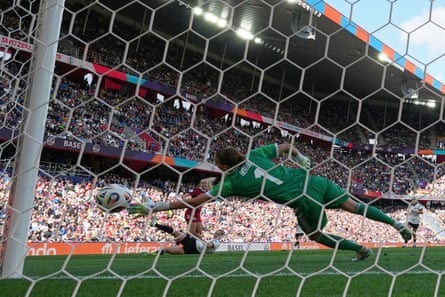

It wasn’t a particularly pretty win and it was aided by some questionable refereeing decisions, but Germany made it two wins from two with a 2-1 win over a tricky Denmark side in what Klara Bühl called “a victory of mentality and passion”.
Having been denied by VAR twice in the first half – correctly – decisions were more favourable in the second. Amalie Vangsgaard had given Andrée Jeglertz’s Denmark a shock first-half lead, but Germany were awarded a soft penalty, again by VAR, which was converted by Sjoeke Nüsken before Lea Schüller was able to sweep in the winner despite Emma Snerle being on the ground having taken a ball to the face from a teammate’s clearance.
The Danes face an anxious wait. A win or draw for Sweden against Poland in the late kick-off will send them out of the tournament.
“We need to make the rules clear,” said Jeglertz of Snerle’s predicament. “If we have a player that has a serious head injury you need to blow the whistle and take responsibility as a referee. I don’t understand why she doesn’t stop the game. There was a similar incident in the first half when the referee didn’t stop the game for a head injury and I question those decisions.”
The Germany head coach, Christian Wück, said: “I don’t know if the decisions are right or wrong but the football system has to work out how to speed that up.”
Emma Snerle lies on the turf after being clattered by a clearance, while Germany’s celebrations begin in the background.Photograph: Matthias Hangst/Getty Images
Around 16,000 Germany fans had been expected at St Jakob-Park, around half its capacity, but it felt like far more had packed in, the record for a group-stage game not involving the hosts broken by an attendance of 34,165.
Hosted in Basel, nestled close to the borders of both France and Germany, meant that this was as close to a home game as is possible for Wück’s side, and the fans treated it as such, singing “We have a home game in Basel” as they marched towards the ground with a “Get well soon GG #7’ banner stretched between some – a tribute to captain Giulia Gwinn who sustained a medial ligament injury in her side’s opening game against Poland.
Denmark were unchanged from the team that lost 1-0 against Sweden in their opening game, it was a strong performance, Pernille Harder may be their talisman but they had shown there is talent beyond the two-time European player of the year.

Germany’s Klara Buhl (not pictured) scores past Denmark’s Maja Bay Østergaard, only to see her effort ruled out for offside.Photograph: Bernadett Szabó/Reuters
Germany looked to have broken the resolve of the well-organised and compact Denmark defence inside 20 minutes but, after a lengthy wait for a VAR check, Bühl’s effort was ruled out, Nüsken deemed to have interfered with play from an offside position as the ball flew through her legs and past the blindsided Maja Bay Østergaard.
Less than 10 minutes later, Germany were behind. Janni Thomsen was dispossessed by Lea Schüller but Vangsgaard was on hand to pinch the loose ball and fire past Ann-Katrin Berger. For the first time the crowd was hushed, the rhythmic clapping and periodic chanting paused while the small pocket of red shirts went wild behind the Danish goal.
Wück’s side would be denied a chance to level via another VAR intervention, Frederikke Thøgersen’s handball having taken place just outside the box on the left after initially being awarded as a penalty by the referee, Catarina Campos.
Denmark’s Amalie Vangsgaard squeezes her shot past Germany goalkeeper Ann-Katrin Berger.Photograph: Martin Meissner/AP
There was further lengthy VAR intervention after the break, this time in Germany’s favour, with Katrine Veje adjudged to have brought down Linda Dallmann inside the box. It was soft, very soft, but the referee pointed to the spot after being told to check the pitchside monitor. Nüsken stepped up and powered her penalty low into a corner, lifting the crowd to their feet and back to full voice in the process.
Germany were fortunate for the goal that put them ahead for the first time too. Emma Færge’s clearance walloped teammate Snerle in the face, sending her to the ground but, despite the head injury, the referee allowed play to continue and Jule Brand laid the ball off for Schüller to stroke in. Such was the ferocity with which Snerle was hit she looked dazed and unsteady leaving the pitch after the goal, half-carried by the two members of the medical team who accompanied her.
Josefine Hasbo replaced Snerle and Denmark went in search of an equaliser that would keep their knockout stage hopes alive.
It didn’t come, Germany are all-but into the quarter-finals albeit in a slightly unconvincing fashion, and Denmark must wait and see whether they will have anything to play for in their final group game against Poland.